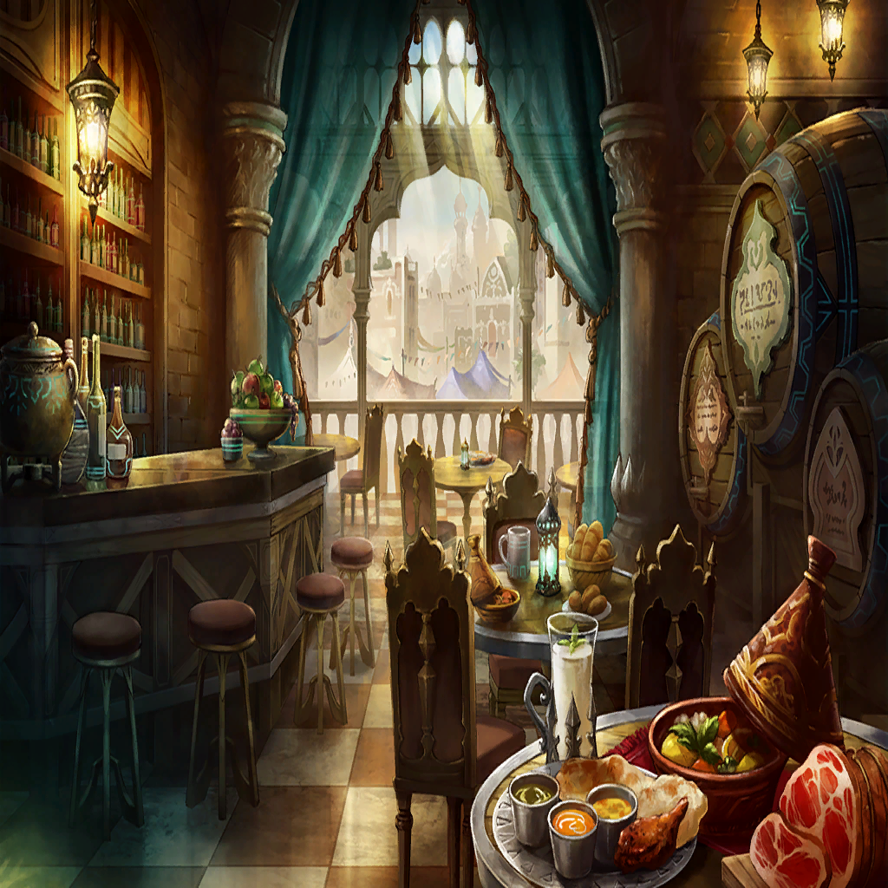

Kamui
Kamui
Kamui
Kamui
Kamui

Kamui
Kamui
Kamui
Kamui
Kamui
Kamui
Kamui
Kamui
Kamui
| |
| |
Kamui |
Spiritbonding, huh? |
| Hawk | It is said to be a mystical power the Sephira were able to use. |
| Hawk | I've been told it was even able to heal the earth and cultivate life. |
Kamui |
Who told you this? |
| Hawk | Well, uh... |
| Hawk | I'm sorry, I've already said too much. For some reason, I felt safe opening up to you... |
Kamui |
Let me warn you: Looking for the Sephira is a waste of your time. |
| Hawk | What? Why is that? |
Kamui |
The blessings of the great Tree of Life have been lost. The other Sephira have lost their ability to use Spiritbonding, just as your mother has. |
| Hawk | How did you...?! You must be...! |
Kamui |
Go back to your home, Hawk. Those who live here are little more than refugees who have lost their powers and seek a peaceful life. |
| Hawk | W-wait, but... |
|  | |
| Burglar | Ugh, ow... That guy was really tough! |
| Burglar | Why is it always like this?! No matter what, fortune favors the nobles over us! |
| Burglar | The Sephira! Don't they know that's just a myth?! |
| Hooded Man | Would you mind elaborating on that? |
| Burglar | Wha—? |
| |
Kamui |
How long do you intend on following me? |
| Hawk | Until you accept my request! Please, lend me your— |
| Hawk | —No, wait. Teach me how to use Spiritbonding! |
Kamui |
Has your mother taught you nothing? |
| Hawk | My mother did not tell me much. |
| Hawk | Only that if I do not have the mark, I should forget about my heritage... She said that right before she died. |
Kamui |
Your mother was wise. Listen, Hawk... Spiritbonding has already been lost. |
Kamui |
Even if those of our bloodline have a natural aptitude for it, our sephirah, which was how we wielded our Spiritbonding, have all been lost. |
| Hawk | S-sephirah...? |
Kamui |
What you called a "mark" is the catalyst which enabled us to sense and control nature's Alchemia. |
Kamui |
As a result, as I've been trying to tell you, we are now merely a nameless community that does not have the power to bring green life back to this desert. |
| Hawk | But... |
| Hooded Man | But still you have your uses. |
| Hawk | Wh-what?! Where did you come from?! |
Kamui |
... |
| Hooded Man | Finally, I've found a surviving member of the Sephira! |
| Former Corpse Knight | If your people have forgotten how to use your inherited powers, then we shall make better use of them for you! |
| Hawk | Mister Kamui! Leave this to me! Run—! |
Kamui |
Well, that took a lot longer than I thought. I was beginning to worry that none of you had noticed the bait. |
| Hawk | Huh? |
| Former Corpse Knight | Wha—?! |
Kamui |
Now, I have a few questions I need to ask you. Are you willing to surrender without making trouble? |